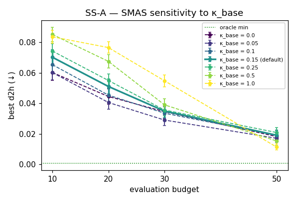
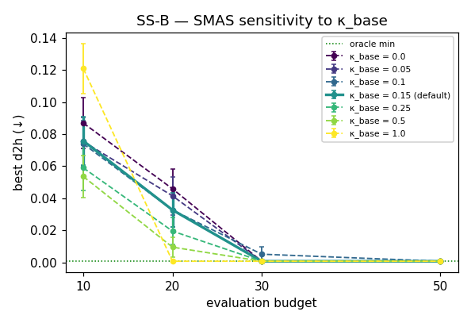
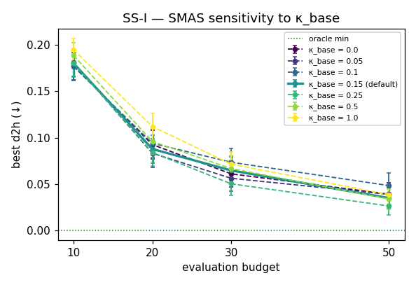
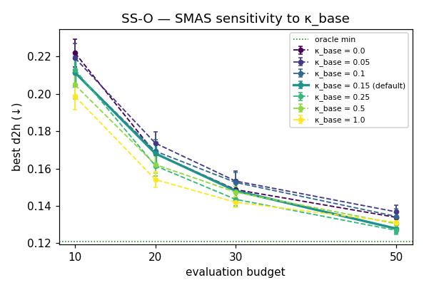
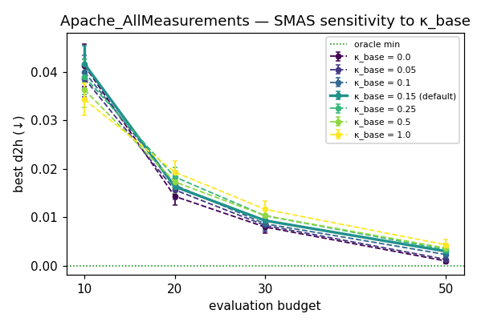
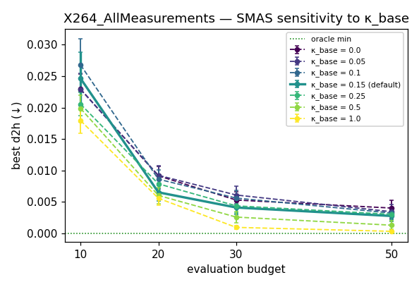
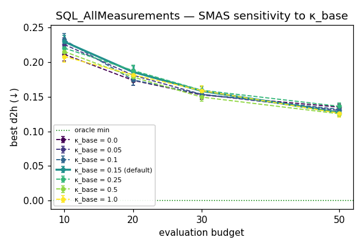
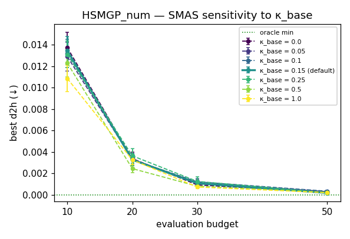

Date: 2026-05-25 · 8 config datasets × 50 repeats · budgets [10, 20, 30, 50] · κ_base sweep [0.0, 0.05, 0.1, 0.15, 0.25, 0.5, 1.0] · runtime 9.1 min · ↩ back to Exp 9
Exp 9 (50 repeats) showed SMAS ≈ INGS at the default κ_base = 0.15,
implying the β-controller adds no significant value. This experiment asks the
follow-up: is SMAS sensitive to κ_base? Three possibilities:
Cell shading: green = best κ for that dataset; yellow = the Exp-9 default κ=0.15 when it's not best.
| Dataset | κ=0.0 | κ=0.05 | κ=0.1 | κ=0.15 | κ=0.25 | κ=0.5 | κ=1.0 |
|---|---|---|---|---|---|---|---|
| SS-A | 0.035 ±0.032 | 0.029 ±0.026 | 0.034 ±0.030 | 0.035 ±0.031 | 0.036 ±0.026 | 0.039 ±0.029 | 0.055 ±0.027 |
| SS-B | 0.001 ±0.000 | 0.001 ±0.000 | 0.005 ±0.031 | 0.001 ±0.000 | 0.001 ±0.000 | 0.001 ±0.000 | 0.001 ±0.000 |
| SS-I | 0.061 ±0.100 | 0.056 ±0.096 | 0.074 ±0.107 | 0.065 ±0.102 | 0.050 ±0.090 | 0.067 ±0.099 | 0.071 ±0.093 |
| SS-O | 0.149 ±0.034 | 0.153 ±0.038 | 0.153 ±0.039 | 0.148 ±0.033 | 0.143 ±0.026 | 0.147 ±0.019 | 0.142 ±0.020 |
| Apache_AllMeasurements | 0.008 ±0.008 | 0.008 ±0.008 | 0.009 ±0.009 | 0.009 ±0.009 | 0.010 ±0.009 | 0.010 ±0.009 | 0.012 ±0.012 |
| X264_AllMeasurements | 0.005 ±0.010 | 0.006 ±0.010 | 0.006 ±0.008 | 0.004 ±0.008 | 0.004 ±0.008 | 0.003 ±0.006 | 0.001 ±0.002 |
| SQL_AllMeasurements | 0.153 ±0.043 | 0.154 ±0.044 | 0.154 ±0.041 | 0.158 ±0.043 | 0.160 ±0.042 | 0.150 ±0.044 | 0.159 ±0.047 |
| HSMGP_num | 0.001 ±0.001 | 0.001 ±0.002 | 0.001 ±0.002 | 0.001 ±0.002 | 0.001 ±0.003 | 0.001 ±0.001 | 0.001 ±0.001 |
| Budget | κ=0.0 | κ=0.05 | κ=0.1 | κ=0.15 | κ=0.25 | κ=0.5 | κ=1.0 |
|---|---|---|---|---|---|---|---|
| N=10 | 0.1044 | 0.1045 | 0.1049 | 0.1059 | 0.1025 | 0.1020 | 0.1086 |
| N=20 | 0.0690 | 0.0685 | 0.0681 | 0.0690 | 0.0672 | 0.0674 | 0.0692 |
| N=30 | 0.0515 | 0.0511 | 0.0543 | 0.0527 | 0.0507 | 0.0522 | 0.0552 |
| N=50 | 0.0416 | 0.0411 | 0.0425 | 0.0395 | 0.0397 | 0.0389 | 0.0392 |
Each cell tests whether the indicated κ produces significantly different per-dataset means than the default. Low p ⇒ that κ is statistically distinguishable from the default.
| Budget | κ=0.0 | κ=0.05 | κ=0.1 | κ=0.15 | κ=0.25 | κ=0.5 | κ=1.0 |
|---|---|---|---|---|---|---|---|
| N=10 | 0.641 | 0.312 | 0.383 | — | 0.312 | 0.461 | 0.945 |
| N=20 | 0.844 | 0.945 | 0.812 | — | 0.844 | 0.844 | 0.844 |
| N=30 | 0.297 | 0.469 | 0.461 | — | 0.938 | 1.000 | 0.578 |
| N=50 | 0.219 | 0.297 | 0.156 | — | 0.578 | 0.469 | 0.938 |
score = 100 · (1 − (d2h(best) − d*) / (d0 − d*)) where
d* = pool min d2h and d0 = pool median d2h (both
computed over the full CSV, not the sampled rows). 100 = found the reference
optimum; 0 = no better than a random pick. Higher is better.
Per-dataset mean win score at N=30 (by κ_base).
| Dataset | κ=0.0 | κ=0.05 | κ=0.1 | κ=0.15 | κ=0.25 | κ=0.5 | κ=1.0 |
|---|---|---|---|---|---|---|---|
| SS-A | 83.2 | 85.9 | 83.7 | 83.0 | 82.6 | 80.9 | 73.1 |
| SS-B | 100.0 | 100.0 | 99.2 | 100.0 | 100.0 | 100.0 | 100.0 |
| SS-I | 83.3 | 84.6 | 79.8 | 82.3 | 86.2 | 81.7 | 80.4 |
| SS-O | 88.8 | 87.0 | 87.3 | 89.1 | 90.9 | 89.4 | 91.6 |
| Apache_AllMeasurements | 96.2 | 96.0 | 95.8 | 95.5 | 95.0 | 95.0 | 94.4 |
| X264_AllMeasurements | 98.5 | 98.3 | 98.4 | 98.9 | 98.8 | 99.3 | 99.7 |
| SQL_AllMeasurements | 65.8 | 65.6 | 65.6 | 64.5 | 64.3 | 66.5 | 64.4 |
| HSMGP_num | 98.1 | 97.7 | 97.5 | 97.8 | 97.4 | 98.3 | 98.5 |
Mean win score across the 8 datasets, per κ × budget.
| Budget | κ=0.0 | κ=0.05 | κ=0.1 | κ=0.15 | κ=0.25 | κ=0.5 | κ=1.0 |
|---|---|---|---|---|---|---|---|
| N=10 | 70.6 | 70.8 | 70.6 | 70.1 | 70.8 | 70.9 | 70.4 |
| N=20 | 83.8 | 84.0 | 83.9 | 83.6 | 83.7 | 83.4 | 82.5 |
| N=30 | 89.2 | 89.4 | 88.4 | 88.9 | 89.4 | 88.9 | 87.8 |
| N=50 | 92.9 | 92.9 | 92.5 | 93.4 | 93.4 | 93.6 | 93.6 |
A win-score view of the same data as Sections 2–3. Aggregate win scores cluster tightly across κ — typical range ≤ 2 points, far below the ~10-point per-dataset variation — reinforcing the aggregate-insensitivity finding from the d2h tables.
One line per κ_base; the default κ=0.15 is drawn solid + thick. SEM error bars.








The table and curves answer the three Exp-9 follow-up possibilities directly. If most κ rows in section 3 cluster within ~0.005 d2h and section 4 shows no κ significantly distinguishable from the default, the β-controller's headroom is small even with optimal κ — the Exp-9 conclusion (controller adds nothing) is robust. If instead some non-default κ shows a clear win (large range in section 3, low p in section 4), the Exp-9 result was κ-limited and the controller has genuine value at the right setting. Per-dataset variation in the best κ (visible in section 2) speaks to possibility 3.